Case study · P. 04
nGAGE: making feedback the easiest thing to do at work.
DPL's employee engagement platform, now used by onboarded clients. I redesigned how people give and find feedback, and designed the team and organisation views HR and leads were missing.
The 60-second version
- Problem
- A cluttered feedback form, too many clicks to see feedback, and no team-level view for HR and leads.
- What I did
- Designed two new versions of the feedback flow (2.0 and 3.0), added team and organisation dashboards, and built the design system.
- Outcome
- Seeing feedback takes one click fewer, by design, and HR reported the new views as useful.
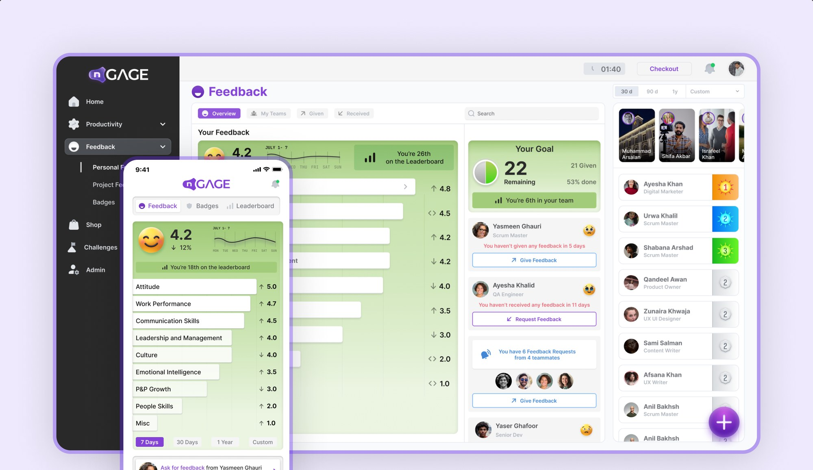
01 Context
What is nGAGE?
DPL's employee engagement platform: feedback, badges, leaderboards, productivity, a rewards shop and annual reviews. It started in-house and is now used by onboarded clients.
| Role | What they do | What was hard |
|---|---|---|
| HR | Track organisation-wide performance and run annual reviews | No organisation or team-level data |
| Team leads | Follow their team's and each member's performance | Team stats were surface-level |
| Employees | Give and receive feedback, earn badges, climb leaderboards | A cluttered feedback form |
Every role uses the web app. The mobile app covers the everyday features: feed, feedback, badges, productivity and the shop.
My part
I started as the only designer in November 2023, with the project lead and developers. About a year later a design lead joined to share the work, and I finished the remaining modules. There was no design system, so I built one.
02 Problem
Feedback was the point of nGAGE, and the hardest thing to give.
The goal: more feedback, through a simpler form and a more pleasant interface.
A cluttered feedback form
The form itself put people off giving feedback.
Too many clicks to see feedback
Finding feedback you'd received took several clicks through the side menu.
A dated interface
Employees and clients both said the UI needed work.
No view above the individual
HR and leads had no organisation or team-level data.
03 Investigation
Talking to the people using it.
nGAGE ran inside DPL, so I could talk to its users directly.
| Method | With whom | What it gave us |
|---|---|---|
| Interviews and conversations | Employees, HR and clients | The pain points in giving and finding feedback |
| Audit of the old design | Me, plus employees' comments | Where the old flow added clicks and clutter |
| Competitor review | Lattice | How a leading performance tool handles feedback and team views |
04 Design decisions
Fewer steps, clearer views, one place to act.
The feedback dashboard, rebuilt
Answers 02 A and 02 CThe dashboard has had three versions. 1.0 was there before me; I designed 2.0 and today's 3.0. Drag the line to compare the original with 3.0.
- 01Your score at a glanceOne overall score, its weekly trend and your rank, instead of a radial chart you had to decode.
- 02Skills as clickable barsEach skill is a bar with its score and direction. Click it for the detail.
- 03A nudge to give moreA feedback goal, your team rank, and prompts to give or request feedback, each with its own button.
One floating button, every feedback action
Answers 02 AOne floating button replaces separate buttons in each module. It opens every action: give or request feedback, task feedback, a badge for a buddy, or a form. Giving feedback is one short panel (who, which skill, a five-face rating and a note), and afterwards nGAGE suggests who to thank next.
Skill bars you can click into
Answers 02 BEach skill bar shows its score at a glance, and its arrow opens the sub-categories inside (Attitude, then Self Motivated) instead of a side-menu sub-item. One click fewer, and less to think about.
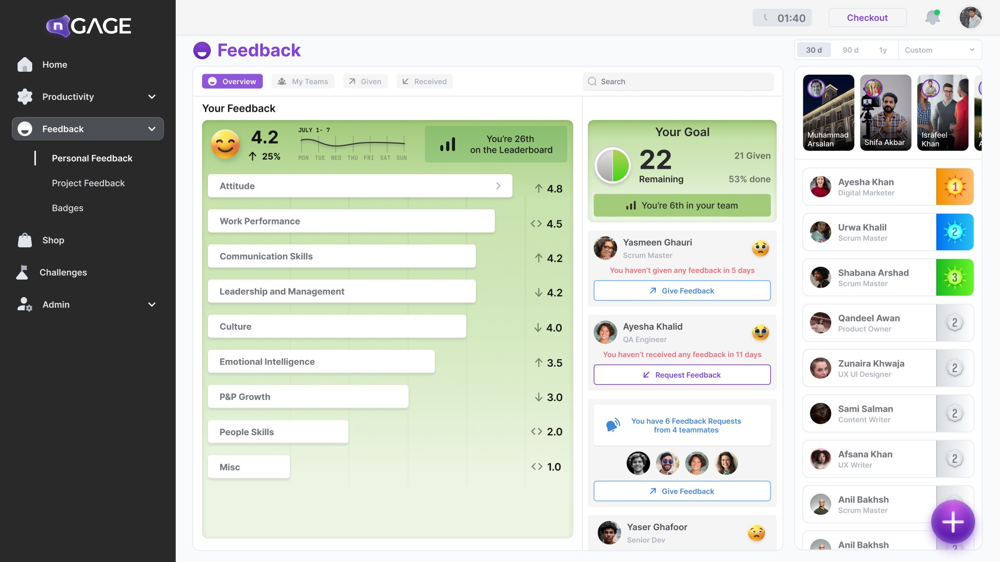
01The arrow opens a skill's sub-categories
Individual and team views
Answers 02 DnGAGE Insights gives leads and HR two levels to look at: one person and a whole team. Both views keep the same time filter (30 d, 90 d, 1y or custom), so moving between levels doesn't lose context.
The profile, then and now
Account settings moved into the new side-menu layout. The profile now leads with a cover, your name and role, and a profile completion bar, with every section listed on the left, including the new Skills Tags and Interests/Hobbies. Drag the line to compare.
Key screens and empty states
The rest of the web app follows the same system: a first welcome, a summary of your feedback, and attendance for a person and a team. Empty screens get their own illustration, one line on why they're empty, and a pointer to the next step, usually the plus button.
Mobile: the everyday essentials
The app keeps what employees use most: their feedback at a glance, giving feedback and badges, the leaderboard and stories, and notifications. The same plus button sits in the middle of the tab bar.
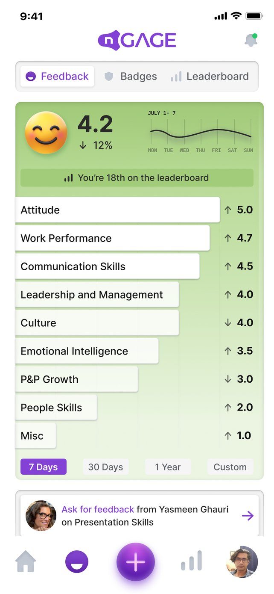
01Feedback at a glance
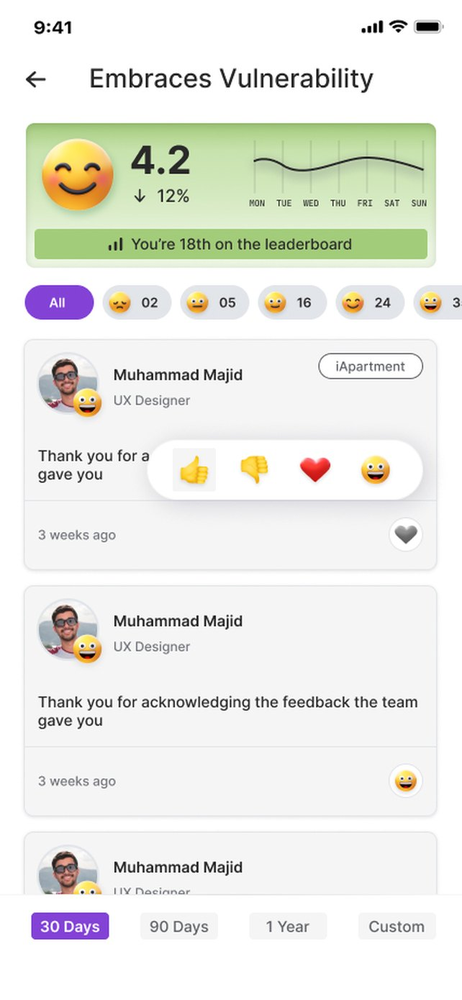
02One skill, in detail
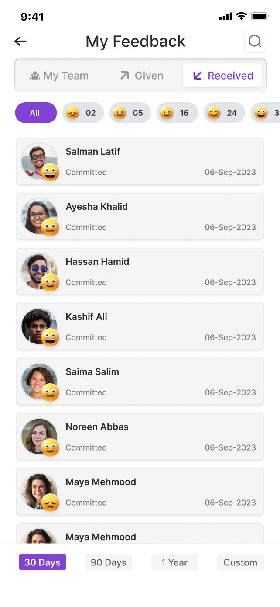
03Feedback received
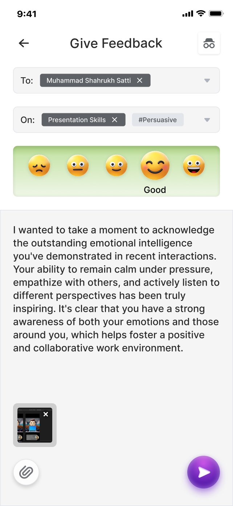
04Give feedback
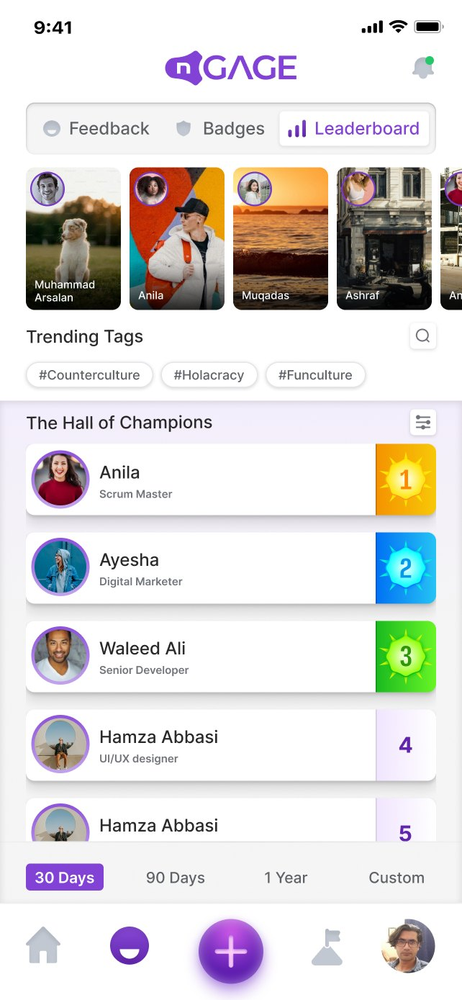
05Leaderboard
06Stories
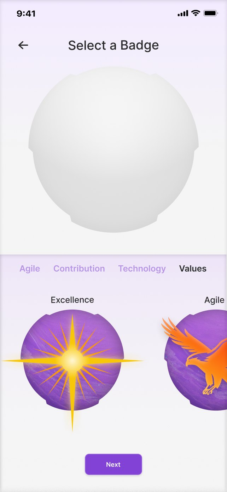
07Select a badge
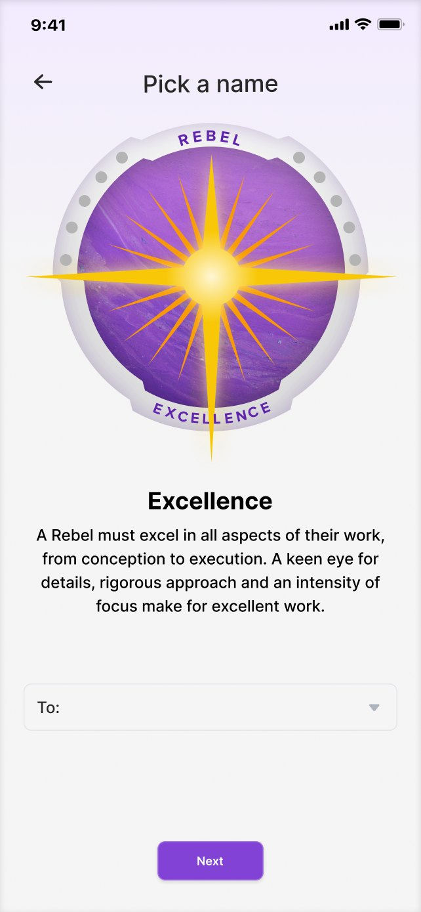
08Pick who gets it
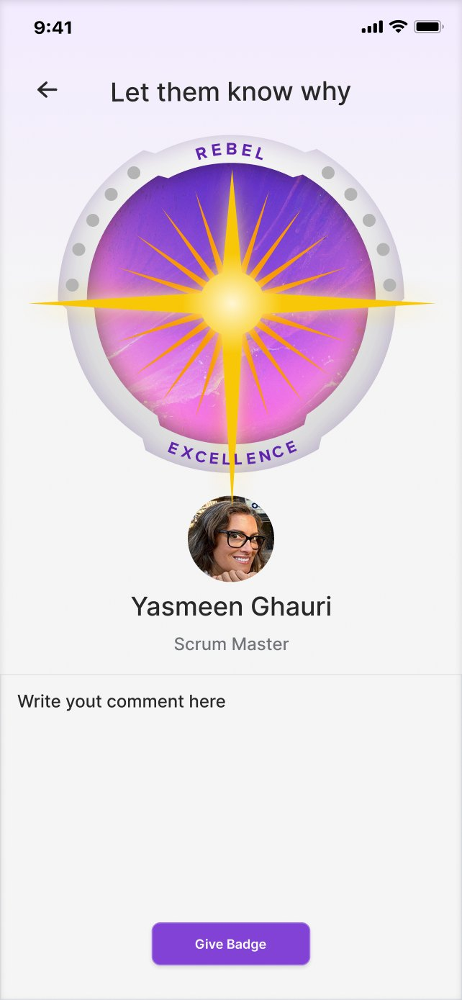
09Let them know why
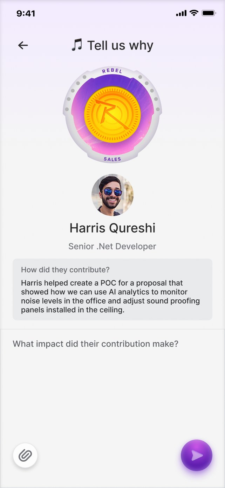
10Tell us why
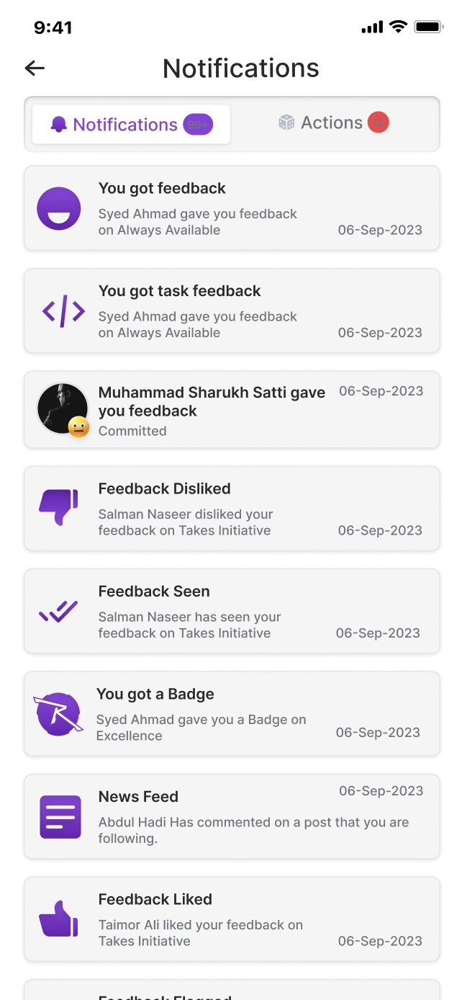
11Notifications
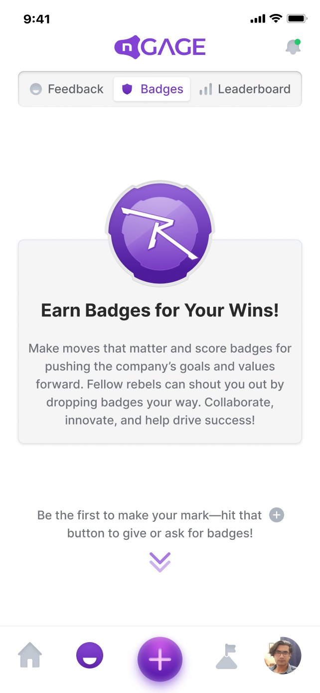
12Badges, empty
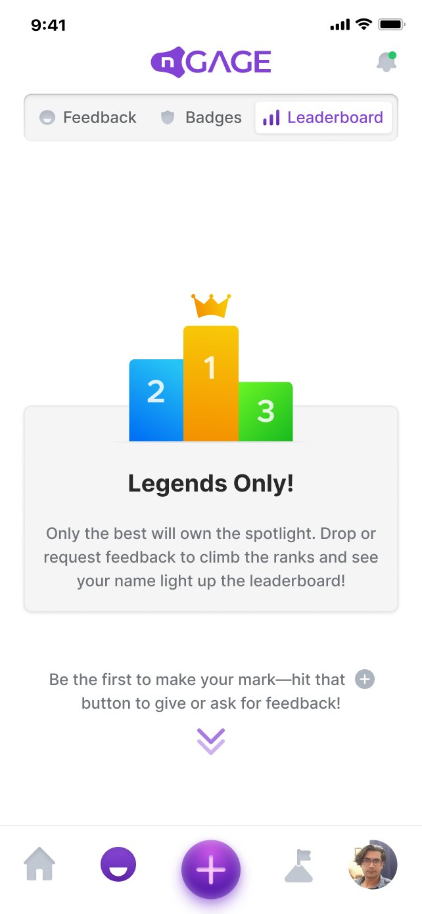
13Leaderboard, empty
A design system from scratch
There was no design system, so I built one to keep 200+ screens consistent across web and mobile: a purple primary with soft neutrals, a five-step rating scale from red to green that runs through every feedback screen, a dark side menu, and buttons and inputs with every state drawn.
- P100
- P200
- P400
- P500
- P600
- P700
- P800
- P900
- N100
- N200
- N300
- N400
- N600
- N700
- N800
- N900
- Poor
- Fair
- Okay
- Good
- Excellent
- Home
- Feedback
- Badges
- Insights
- Admin
- Employee Directory
- Project Hub
- Role Setup
- Badge Control
Where AI helped
Later in the project, Figma Agent helped map design flows and Figma AI helped with copy. The design itself was done by hand.
05 Iteration
Two new versions, shaped by the people using it.
Version 1.0 was already live when I joined. I designed 2.0 and 3.0, each shaped by feedback from stakeholders, employees and HR.
From 1.0 to 2.0
My first redesign moved the app to a side menu, replaced the radial chart with bars that show how your feedback splits from 5 to 1, and added an overall rating and your most recent feedback.
From 2.0 to 3.0
3.0 puts your score, its weekly trend and your rank up front, turns each skill into a bar you can click into, and adds a feedback goal with nudges to give or request feedback.
06 Outcomes
Designed for every role, and HR noticed.
nGAGE 3.0 is shipped and in use at DPL and its onboarded clients.
| Evidence | Result |
|---|---|
| Reported by HR | Positive feedback from HR on the new team and organisation views |
| By design | Seeing feedback takes one click fewer. Giving feedback is one icon away. One floating button for actions across modules. 200+ screens on one design system |
| Not yet measured | How much more feedback people give, and how long it takes |
07 Learnings
What I'd take to the next project.
Not every path needs a side menu
A clickable bar took out a click and some mental load. Sometimes the shortest path isn't in the navigation at all.
Peer review makes the work better
I worked alone for the first year. Once a lead joined, reviewing each other's work improved the design.